Basics
NKU offers free static website hosting for students and faculty. These instructions
will show you how to connect to the drive and make a basic resume page.
Connecting to the Drive
Windows 10
- Be sure you’re connected to NORSE-NET before connecting to the
drive.
- Open File Explorer. Click on "This PC". At the top menu
select "Map Network Drive."
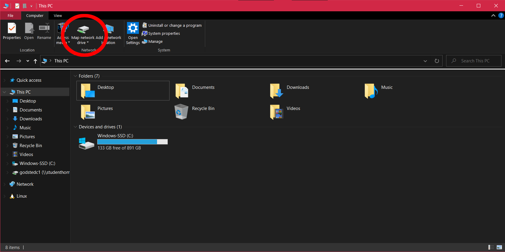
- In the Folder field, enter the server name: \\studenthome.nku.edu\username
- Your username is your NKU username, i.e. \\studenthome.nku.edu\godstedc1
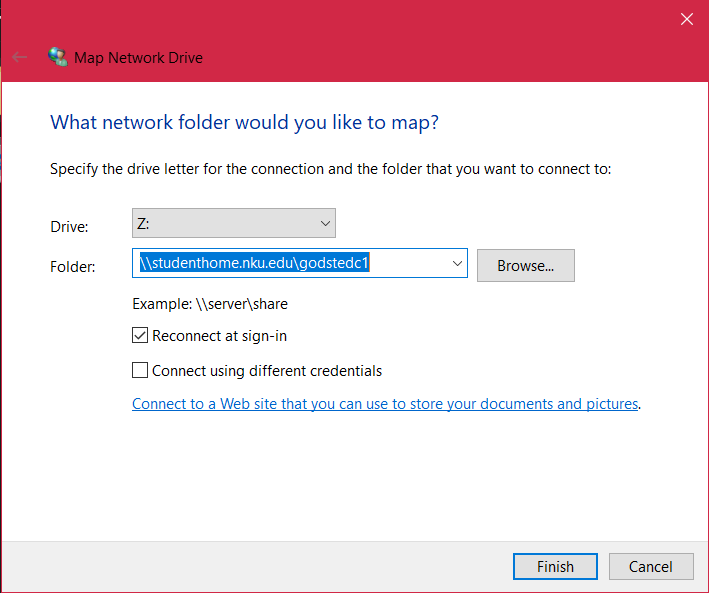
- Click Finish.
- Sign in with your NKU credentials.
- Make sure to put nku\ before your username, i.e. nku\godstedc1
- OR If you have an NKU provided computer, just use your NKU
username.
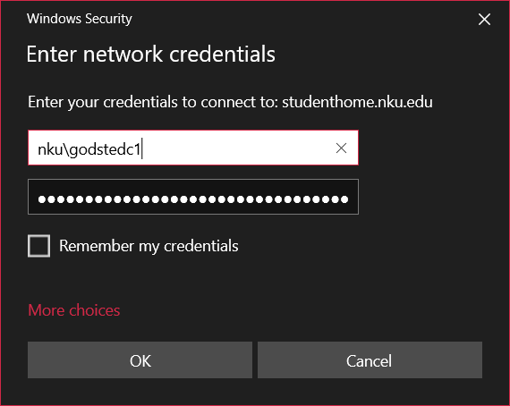
- The drive will show up in a new window.
Windows 11
- Be sure you’re connected to NORSE-NET before connecting to the
drive.
- Open File Explorer. Right Click on "This PC". From the menu,
select "Map Network Drive."
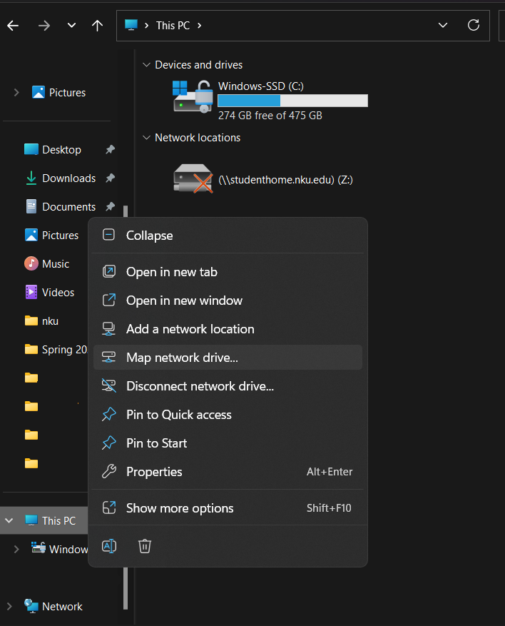
- In the Folder field, enter the server name: \\studenthome.nku.edu\username
- Your username is your NKU username, i.e. \\studenthome.nku.edu\godstedc1
- Sign in with your NKU credentials.
- Make sure to put nku\ before your username, i.e. nku\godstedc1
- OR If you have an NKU provided computer, just use your NKU
username.
- The drive will show up in a new window.
Mac
- Be sure you’re connected to NORSE-NET before connecting to the
drive.
- From the Finder app, choose Go from the top navigation menu, and choose connect
to server.
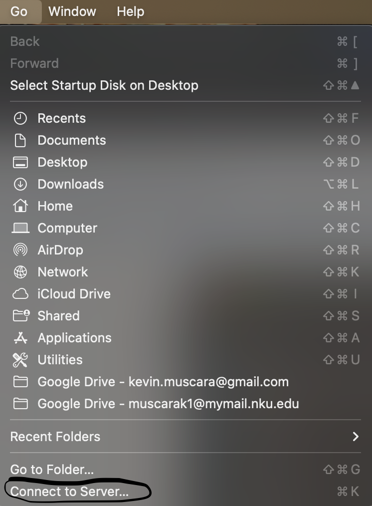
- In the folder field, type smb://studenthome.nku.edu/username
- Your username is your NKU username, i.e. godstedc1
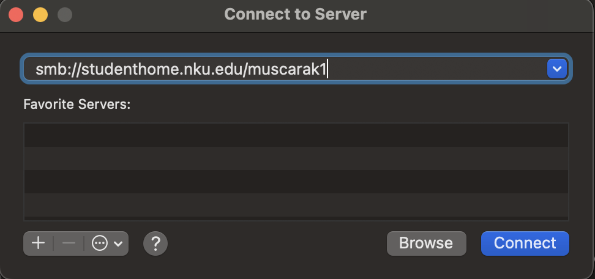
- Sign in with your NKU credentials.
- Make sure to put nku\ before your username, i.e. nku\godstedc1
OR If you have an NKU provided computer, just use your NKU
username.
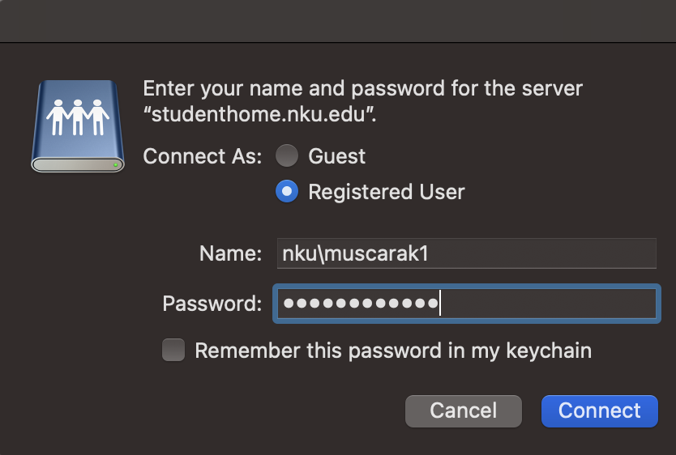
- It will open Finder. In the left menu under Locations will be
studenthome.nku.edu.
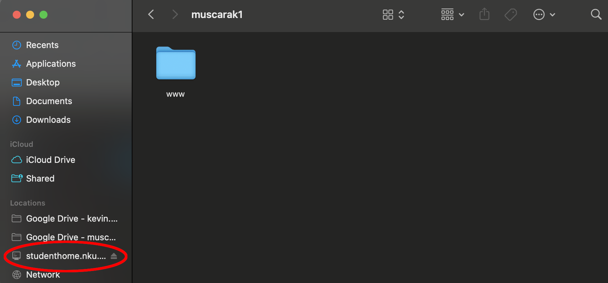
Linux (PopOS/Ubuntu)
- Be sure you’re connected to NORSE-NET before connecting to the
drive.
- Open Files, and choose Other Locations
- Under Connect To Server, enter the server name: smb\\studenthome.nku.edu\username
- Your username is your NKU username, i.e. smb\\studenthome.nku.edu\godstedc1
- Change “Connect As” to Registered User.
- Sign in with your NKU credentials.
- Make sure to put nku\ before your username, i.e. nku\godstedc1
- The drive will open in the current window.
ChromeOS
- Be sure you’re connected to NORSE_NET before connecting to the
drive.
- Open Settings > Files > Network file shares > Add file
share.
- Under File Share URL, enter the server name: smb://studenthome.nku.edu\username
- Your username is your NKU username, i.e. smb://studenthome.nku.edu\godstedc1
- Sign in with your NKU credentials.
- Make sure to put nku\ before your username, i.e. nku\godstedc1
- Open the Files App. The network drive should appear in the left
sidebar.
Final Notes
Once you are connected to the network drive, it can be accessed just like any other drive
connected to your computer. Files can be copied and pasted like you would to a flash drive.
Editing Guide
Anything you add to the page will be accessible on the global internet through https://studenthome.nku.edu/~username/
Editing the Template
For this guide, we will create a basic resume page based off of a template.
Visit the Workshop
Template page and choose a design.
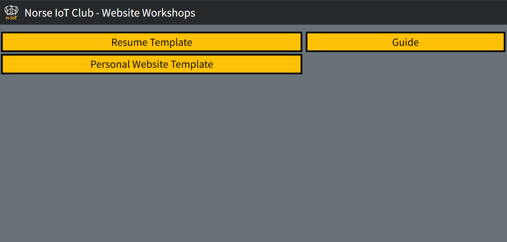
Each template has three colour options, so choose the colour/design you prefer.
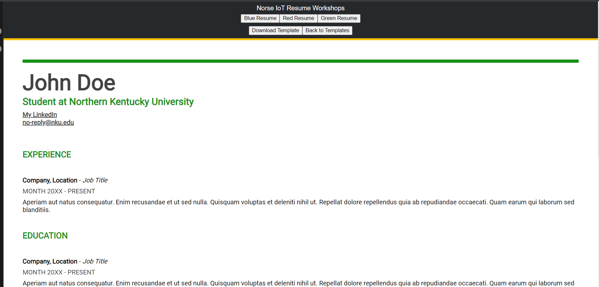
Once you have one you like, click the download button at the top.
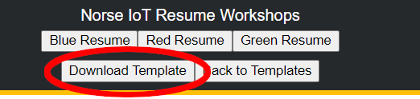
If you don’t like any of the templates, you can use Google Docs or Microsoft Word to design
your own. Do note that as these are not designed to be web page editors, it might not look good on all platforms.
Instructions are available below.
To edit the file, we recommend using Visual
Studio Code. It is available for all platforms, including ChromeOS through a web
app. You can use Notepad, but the interface will be less user
friendly.
Open the file in Visual Studio Code (or Notepad)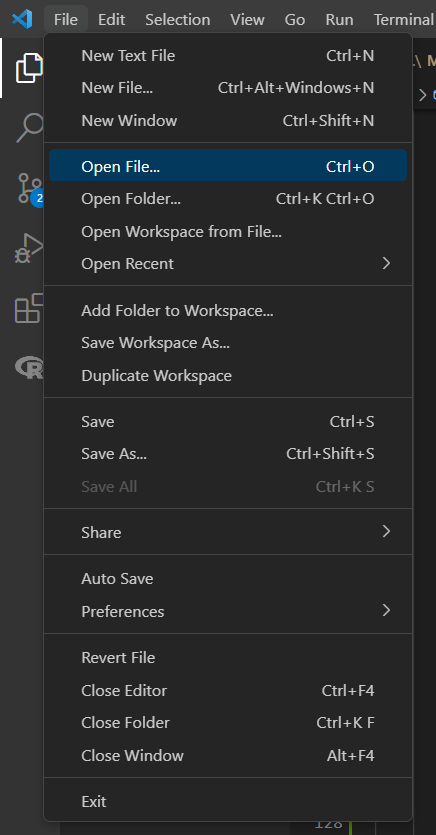
The first half of the template contains the design - or CSS code. The second half
contains the content and structure of the document - or HTML code. Scroll down past the CSS to the <main>
tag. (You can use CTRL-F)
From here, you can change the document to reflect your own name, work experience, and
education.
If you want to add additional work experiences, or education, just copy everything from
First Job Begin to First Job End, and
paste it immediately following First Job End, before the
</section> tag.
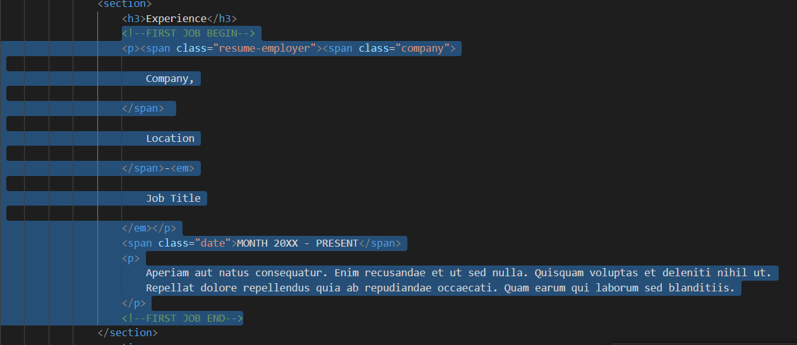
You can preview your changes by opening your index.html file in your browser. Once both
are open, you can save the file in Visual Studio Code (or Notepad), and then refresh your browser to see the
changes.
Uploading to the Drive
Once you are finished editing the file, go back to your network drive, and open the WWW
folder.
Anything in this folder will be accessible on the internet, and anything named index will be shown
when you go to the root directory - meaning when you just connect to https://studenthome.nku.edu/~username/.
Start by removing the index.php file in the directory. We’ll be replacing it with
the index.html file that we created.
Copy the index.html file that you edited from your Downloads folder to the WWW folder
on your network drive. Congrats, you’re done!
Additional Notes
GitHub Pages Guide
If you are unable to connect to your network drive, or want to ensure you can keep your site even
after you graduate, you can use GitHub
Pages in order to host your site on their servers.
- First, sign
up on GitHub.
- Then, create
a new repository (a place to store your website’s code)
- For repository name, enter yourgithubusername.github.io
- For me, that would be congodsted.github.io
- Leave all the settings as default, and choose Create
Repository.
- You can either use the GitHub Desktop app to synchronise your
changes, or just upload your files directly. For now, we’ll just upload our site there.
- From your repository, click Add Files, and choose Upload
Files.
- Either drag and drop your files into the provided box, or click to
find them on your machine like you would on Canvas or Google Drive.
- If you want, you can add a description of your changes in the first
textbox.
- Click commit changes.
- You’re done! Head to yourgithubusername.github.io
and see your site.
Using Word or Google Docs
If you don’t like any of the provided templates, you’re welcome to either
write your own from scratch or design one in Word or Google Docs. Both let you export an HTML file that you can
use. This file might not look as good though, as neither are designed for web design.
Save the file as index.html, and return to Uploading to the Drive.